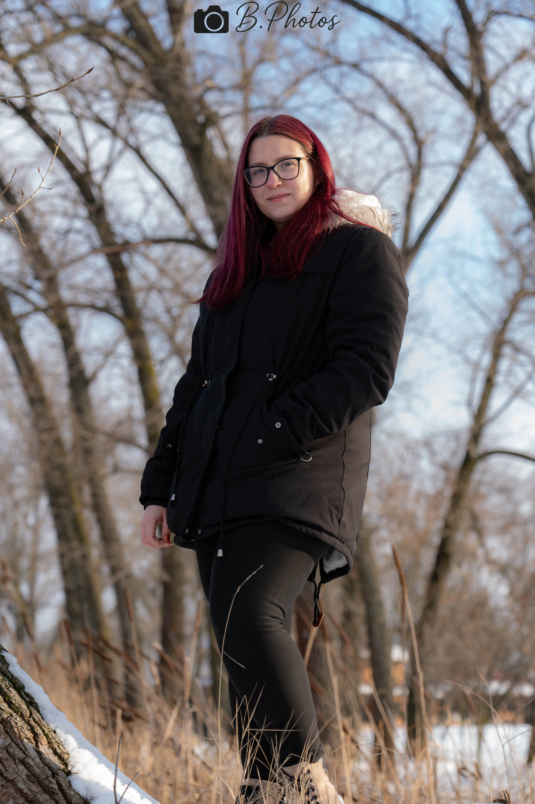
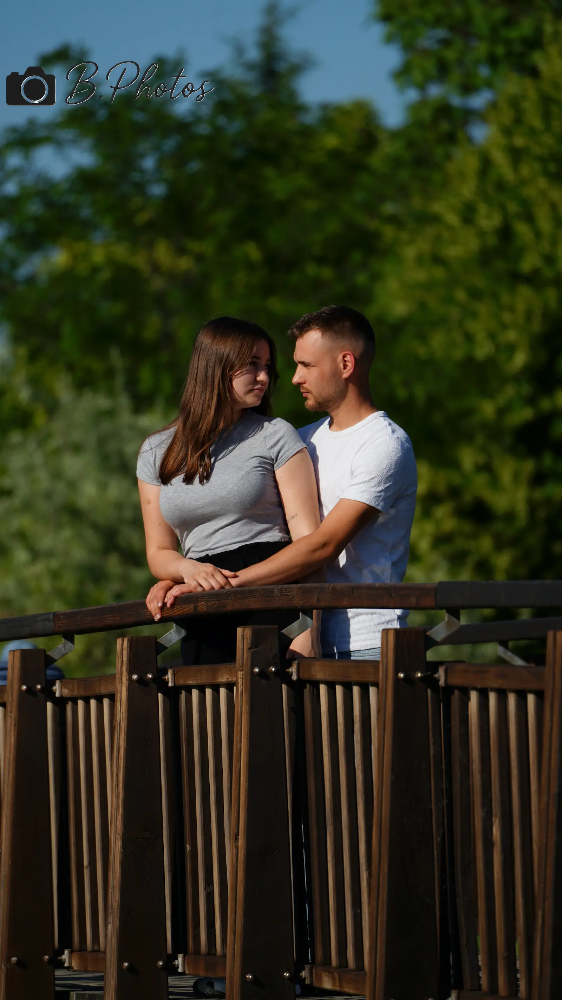

Ha olyan képeket szeretnél, amelyek nem esetlegesek, hanem valóban erősítik a jelenlétedet.
Prémium fotózás Bécsben
Prémium képek, amelyek azonnal erősebbé teszik a megjelenésedet.
Portré, páros, természet, autós és családi fotózás Bécsben. Nyugodt vezetéssel, tiszta felépítéssel és prémium utómunkával.
Nincsenek sablonpózok. Nincs futószalag. Csak tudatos, jól vezetett, használható végeredmény.

Nincs hosszú bizonytalanság, csak gyors visszajelzés és világos következő lépések.
Városi, természetes vagy letisztult helyszín, mindig a célodhoz és jelenlétedhez igazítva.
Átlátható átadás, rendezett válogatás és kényelmes hozzáférés a végleges anyaghoz.
Segítek jelenlétben, testtartásban és képérzetben, hogy ne legyen erőltetett az eredmény.
Természetes, mégis tudatos retus és olyan képi vonal, ami hosszabb távon is megállja a helyét.
Miért velem dolgozz?
A fotózásnak nemcsak jól kinéznie kell, hanem jól is kell működnie közben.
Az első kapcsolatfelvételtől az átadásig olyan folyamatot kapsz, ami nyugodt, tiszta és következetesen prémium érzetű.
01
Természetes pillanatok
Nem merev pózokkal dolgozunk, hanem olyan képekkel, amelyek tényleg illenek hozzád.
02
Nyugodt légkör
Végig vezetlek a folyamaton, hogy a kamera előtt ne feszengj, hanem jelen tudj maradni.
03
Prémium és időtálló
A végeredmény most is erős, később is vállalható és tudatosan használható marad.
Szolgáltatások
Nem rád húzok egy stílust, hanem a hozzád illő képi irányt építjük fel.
Minden sorozat más tónust kíván. A közös alap mégis ugyanaz: tiszta felépítés, nyugodt vezetés és hiteles végeredmény.

01
Portré
Erős, letisztult képek profilhoz, brandinghez vagy személyes megjelenéshez.
Portfólió megnyitása
03
Természet
Lágy fények, nyugodt környezet és olyan képi hangulat, ami természetes marad.
Természetes sorozatok
04
Autós
Forma, fény, felület és jelenlét. Akkor jó, ha a képnek karaktere van, nem csak tárgya.
Autós portfólió
05
Baba / családi
Meleg, nyugodt anyag valódi közelséggel és elég térrel ahhoz, hogy a képek ne legyenek merevek.
Családi képekCsomagok
Tiszta csomagméretek egy erős induláshoz.
Látod a léptéket, de a végső irányt így is a célodhoz igazítjuk. A csomag csak keret, nem merev doboz.
Essence
97 EURGyors, tiszta belépő egy portréhoz vagy rövidebb sorozathoz.
- 30–40 perc fotózás
- 8–12 retusált kép
- 1 helyszín, online átadással
Signature
167 EURA legerősebb középút, ha többféle kép, több hangulat vagy tudatosabb megjelenés kell.
- 60 perc fotózás
- 20 retusált kép
- 1–2 helyszín, több mozgástérrel
Prestige
219 EURTöbb idő, tudatosabb kreatív vezetés és nagyobb végeredmény prémium jelenléthez.
- 90 perc fotózás
- 25+ retusált kép
- Több jelenet vagy helyszín


Rólam
Úgy dolgozom, hogy a kamera előtt ne szerepet kelljen játszanod, hanem jelen tudj maradni.
Sandor Busi vagyok, a B. Photography mögött. Olyan képeket készítek, amelyek személyesek maradnak, mégis tudatos és prémium benyomást keltenek.
A légkör nyugodt, a vezetés tiszta, az átadás rendezett. Így olyan anyag készül, ami emberileg hiteles és vizuálisan is erős.
- Természetes pillanatok túlirányított vagy túljátszott pózok helyett.
- Világos segítség testtartásban, jelenlétben és abban, hogyan mutat jól a kép rólad.
- Prémium utómunka rendezett átadással és olyan képi vonallal, ami hosszabb távon is vállalható.
Visszajelzések
A bizalom nemcsak a képeken látszik, hanem abban is, ahogy végigmegyünk a folyamaton.
„Nyugodt volt az egész folyamat, a képek pedig pontosan azt a hangulatot adták vissza, amit szerettünk volna.”
„Nem sablonpózok lettek, hanem erős, használható képek. Végig biztos kézben éreztem magam.”
„Gyors visszajelzés, pontos egyeztetés és tiszta végeredmény. Pont ilyen élményt kerestem.”
Következő lépés
Ha azt szeretnéd, hogy a képeid ugyanazt a szintet mutassák, amit te is képviselni akarsz, itt induljunk el.
Írj röviden vagy indíts foglalási kérést. Átnézem, mire van szükséged, és egy világos következő lépéssel jelentkezem.